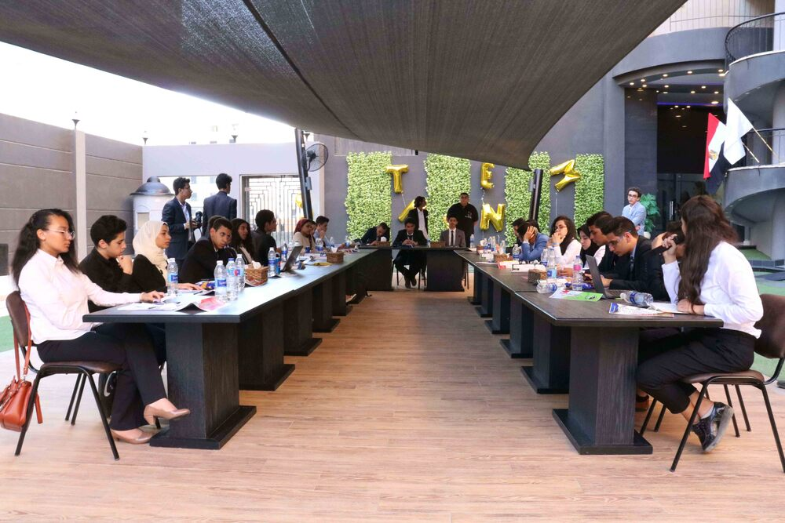
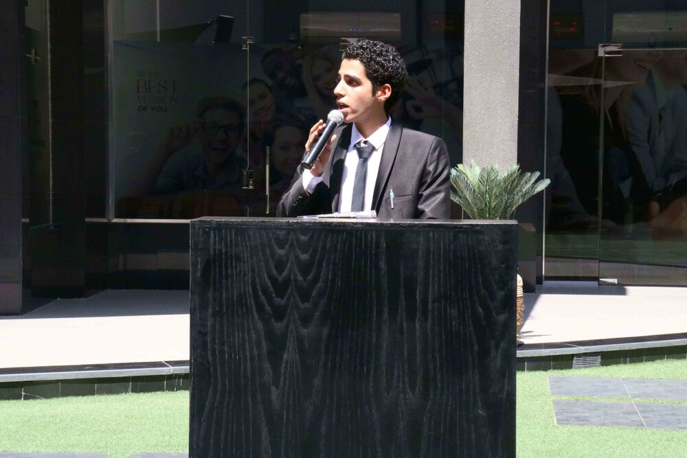
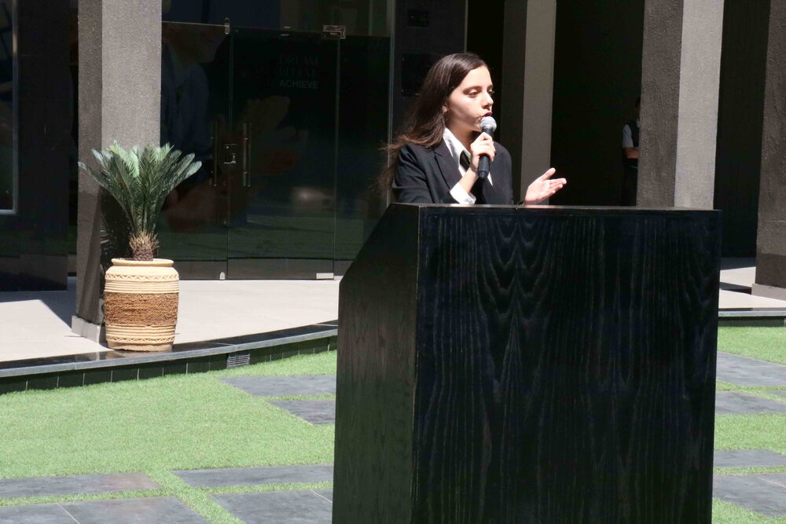
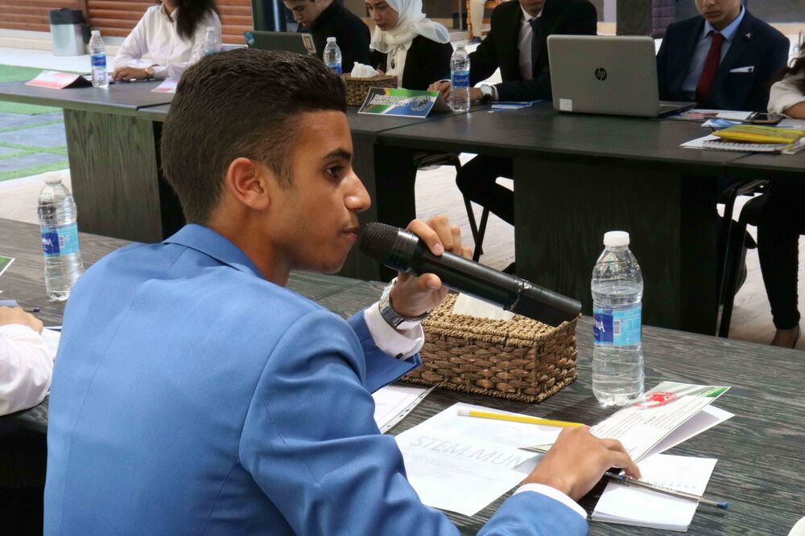
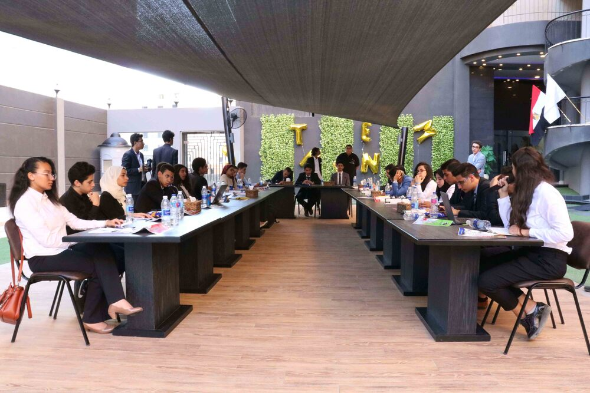
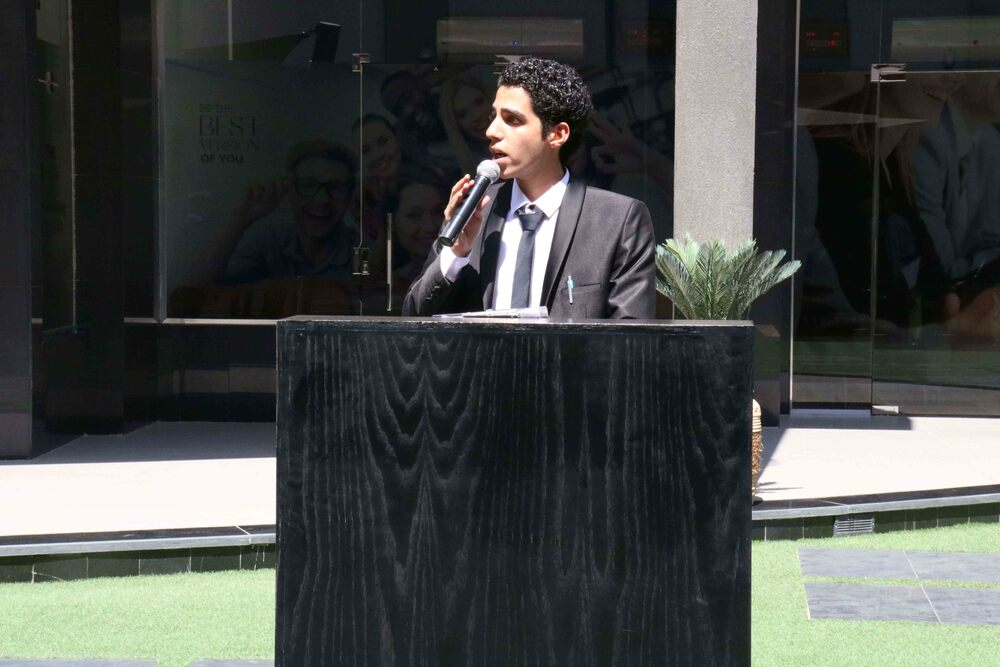
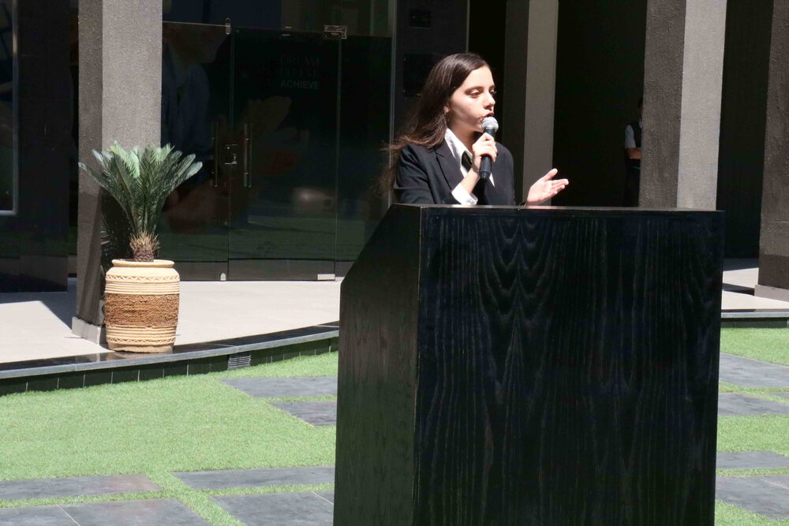
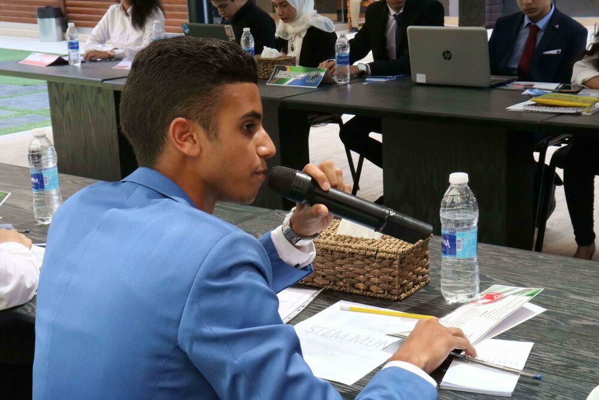

The first STEM MUN conference held a simulation for the UN
security council with its current 15 members and other 7 members
who are directly engaged in the Yemen civil war conflict. All
participating delegates received training to teach them how
foreign policy works, the principles and procedures of a UN
conference, and the recognized way to encounter world issues
through debating, providing evidence, and presenting resolutions.
The conference was held at Empire Training and Education at 6th of
October city by the attendance of the 22 delegates, STEM October
school principal, school counselor, and STEM Maadi deputy. After
previous preparation and hard work, the conference was proven to
be a remarkable simulation of the UN among high schoolers, the
delegates showed unique diplomacy and professionalism, and
received acclaim from all attendees.


 






